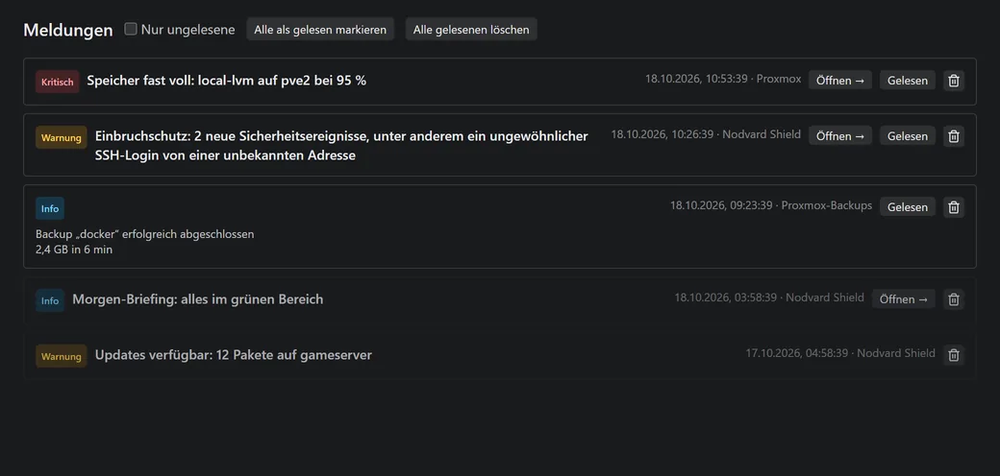

Funktionen
Was Nodvard Deck heute kann. Teile, die noch nicht so gründlich erprobt sind wie der Rest, tragen das Schild Beta.
Server und Proxmox
Jeder Server bekommt eine eigene Seite mit Zustand, Auslastung und Aktionen. Einen Server richtest du in der Oberfläche ein, auch mit Benutzer und Passwort. Ein Terminal brauchst du dafür nicht.
- CPU, RAM, Platten und Laufzeit live
- Betriebssystem, fehlgeschlagene Dienste und offene Updates per SSH
- Terminal und Dateimanager im Browser
- Proxmox: Knoten, VMs und LXC starten und stoppen, Konsole im Browser, Snapshots, Hardware und Speicher
- Festplatten-Zustand, ZFS und Temperatur der Proxmox-Knoten
Proxmox ist kein Muss. Ein Raspberry Pi, ein NAS oder ein paar Docker-Hosts reichen.

Docker
Alle Container deiner Server auf einer Seite, mit Zustand, Logs und Konsole. Stacks aus Compose-Dateien siehst und bedienst du als Ganzes.
- Starten, stoppen, neu starten, Logs mit Suche, Konsole und Details
- Image-Updates finden und einspielen. Das alte Image bleibt als Sicherung. Startet der neue Container nicht, geht Deck von selbst zurück, außer bei Datenbanken.
- Compose-Dateien als Text oder im Formular bearbeiten. Vor dem Speichern prüft Docker Compose die Datei auf dem Server.
- Neue Stacks anlegen, auch aus Vorlagen für Uptime Kuma, Vaultwarden, Nginx Proxy Manager und Gitea
- Ganze Stacks aktualisieren und zurück zur vorigen Version, auf Wunsch mit Sicherung der Volumes vorher
- Umzug aus Portainer: Deck übernimmt Compose-Datei und Variablen, die Volumes mit deinen Daten bleiben
- Images, Volumes und Netze aufräumen

Nodvard Shield
Shield prüft deine Linux-Server und zeigt, was es findet. Was danach passiert, entscheidest du.
- Virenscan mit ClamAV als Schnellscan, Tiefenscan oder nach Zeitplan, mit Quarantäne
- Härtungs-Check mit Lynis
- Update-Zentrale mit den offenen Sicherheitsupdates je Server
- Einbruchschutz: ungewöhnliche SSH-Logins, Fail2ban und offene Ports
- Datei-Wächter für wichtige Systemdateien
- Morgen-Briefing mit dem Stand der Nacht
- Auf Wunsch eine KI-Wache für abgestürzte Container, mit deinem eigenen Ollama
Am meisten sieht Shield, wenn Deck auf dem Server sudo-Rechte hat.

Backups
Deck zeigt, ob deine Backups wirklich laufen, und sichert sich auch selbst.
- Alle Proxmox-Backups auf einen Blick, mit Warnung bei fehlenden oder fehlgeschlagenen
- Backup-Jobs anlegen und bearbeiten
- Einen Gast aus dem Backup als Kopie wiederherstellen, das Original bleibt unberührt
- Vor dem Update eines Stacks auf Wunsch die Docker-Volumes sichern
- Vor jedem Update von Deck eine Kopie der eigenen Datenbank, dazu eine Sicherung zum Herunterladen und Wiederherstellen

Apps
Eine Startseite für die Dienste in deinem Netz. Jede App ist eine Kachel mit Adresse und Symbol, sortiert in Ordnern.
- Container mit Weboberfläche findet Deck auf deinen Docker-Servern von selbst
- Eigene Apps fügst du mit Adresse und Symbol hinzu
- Die Reihenfolge änderst du per Ziehen oder über das Menü der Kachel

Integrationen
Deck holt Zustand und Zahlen aus deinen Diensten und zeigt sie als Kachel und eigene Seite. Die meisten lesen nur und ändern nichts.
Dazu kommen weitere Module: Skripte für einen oder viele Server, auch nach Zeitplan; Dokumente mit Texterkennung und Volltextsuche; ein Inventar mit Garantie-Erinnerung; Gameserver Beta. Jedes Modul schaltest du einzeln an oder aus.
Tresor
Zugangsdaten für Server und Dienste liegen verschlüsselt im Tresor von Deck.
- Passwörter, API-Tokens und SSH-Schlüssel an einem Ort
- Auf Wunsch erzeugt Deck für jeden Server einen eigenen SSH-Schlüssel. Der geheime Teil bleibt im Tresor.
- Geheime Werte in Skripten holt Deck erst beim Ausführen aus dem Tresor
- Jedes Modul kommt nur an die Zugangsdaten, für die es freigegeben ist
Meldungen
Alles, was deine Aufmerksamkeit braucht, landet in einer Liste: volle Platten, fehlgeschlagene Backups, offene Updates und Funde von Shield.
- Push aufs Handy über ntfy, Telegram, Discord, Gotify, Pushover, Matrix, Slack, Mattermost oder eine eigene Apprise-API
- Für jeden Kanal eine eigene Mindest-Stufe
- Deck lässt sich als App auf den Startbildschirm des Handys legen

Freigaben und Konten
Alles, was etwas verändert, ist in Deck eine Aktion mit Risikostufe. Deck schlägt vor, du bestätigst. Was ohne Rückfrage laufen darf, legst du selbst fest, etwa mit einer Sperrliste oder einem Wartungsfenster.
- Jede Aktion steht im Protokoll
- Benutzer mit Rollen und Rechten
- Anmeldung mit Zwei-Faktor-Code aus einer App
- Name, Logo und Farben von Deck sind Einstellungen